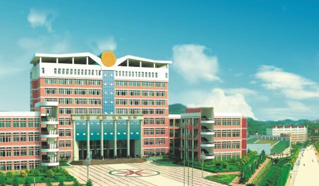

您当前的位置：首页 > 学校  东北电力大学坐落在吉林省吉林市，是吉林省重点大学，是国家大学生文化素质教育基地、全国社会体育人才培训和科研基地，首批国家级工程实践教育中心建设单位，"卓越工程师教育培养计划"试点高校，国家级专业技术人员继续教育基地。2012年学校入选为国家"中西部高校基础能力建设工程"重点建设高校。 学校始建于1949年，是新中国建立的第一所电力工科学校，1958年定名为吉林电力学院，1978年更名为东北电力学院。2000年起，实行"中央与地方共建，以地方管理为主"的管理模式，2005年学校更名为东北电力大学。 学校是全国首批硕士学位授权单位，形成了以电力特色为主，多学科交叉融合，较为完整的学科体系。据2014年2月学校官网显示，学校共有16个学院，41个本科专业，涵盖了工、理、管、文、法、经、教育、艺术8个学科门类。有教职工1400余人，全日制在校生近19000人。 首页 关于我 旅行记 学校 学校 留言版 姓名：谷一鸣性别：女 出生日期：1994 星座：处女座 家乡：河北省石家庄市 就读学校：东北电力大学 爱好：喜欢旅行，热情开朗，朋友较多，爱吃